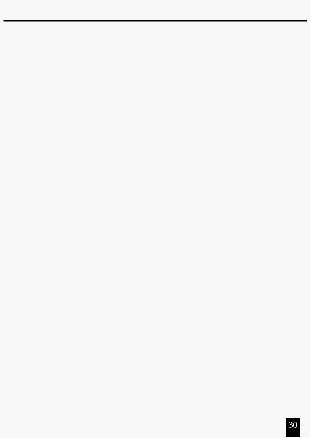

Технічні характеристики
Вхід живлення..........................................
DC 12~20V, 500 m хв.
Вихід DMX................................................XLR 3 конт. - гніздо
Сигнали MIDI ...........................................5 конт. стандартний інтерфейс
Аудіо вхід (Audio Input)
...........................100 mV~1Vpp
Запобіжник (внутрішній)..........................F0.5A 250V 5x20mm
Габарити
..................................................711x264x85mm
Вага
..........................................................7.2 kg
Увага!
1.
Для якісного зберігання Ваших програм на цей пульт повинне подаватися
живлення не менш двох годин щомісяця.
2.
Цифровий дисплей показує повідомлення "LOP" при значному зниженні
напруги живлення.